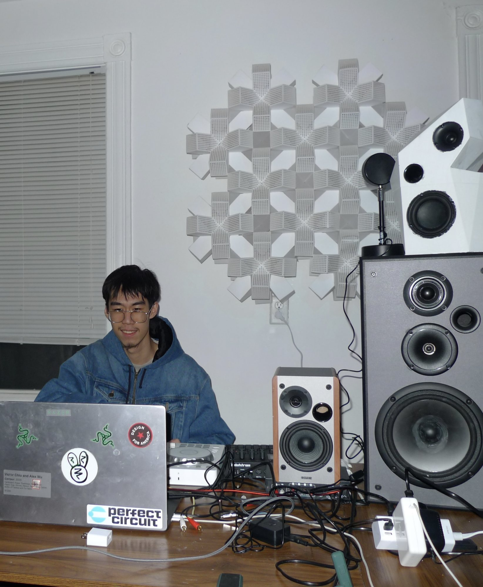

About
Victor Chiu
Victor Chiu is an interdisciplinary artist whose work moves between material experimentation and electronic media.
He is currently working with modular synthesizers and DIY sound objects, combining them with DAWs such as Ableton Live and Max/MSP to create sound pieces that transform spaces in real time.
Through painting, installation, and sound design, his practice explores filtering, perception, and the instability of self in an image- and media-saturated world. His work draws on absurdity and repetition to question how reality is constantly mediated and curated.
His work has been exhibited at Angell Street Gallery, Providence. He creates sound works under the alias EDNZ. He is currently pursuing a Bachelor of Fine Arts in Painting at the Rhode Island School of Design.

| vchiu004@gmail.com | |
| @victor_ch1u | |
| Bandcamp | EDNZ |
| Based in | Providence, Rhode Island |
| Education | BFA Painting, Rhode Island School of Design |
|---|---|
| Exhibited | Angell Street Gallery, Providence Repeat After Me, Memorial Hall Tap Room, RISD |
| Alias | EDNZ — sound works |
| Working with |
Modular synthesisMax/MSP/JitterSuperColliderAbleton Livegen~DaisyDIY sound objectspainting |